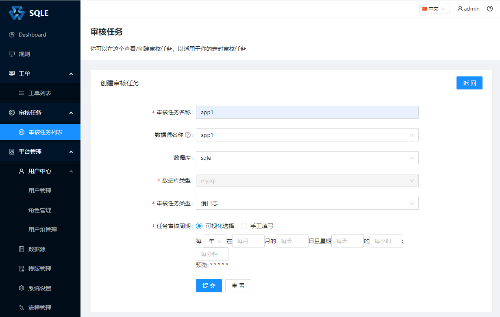
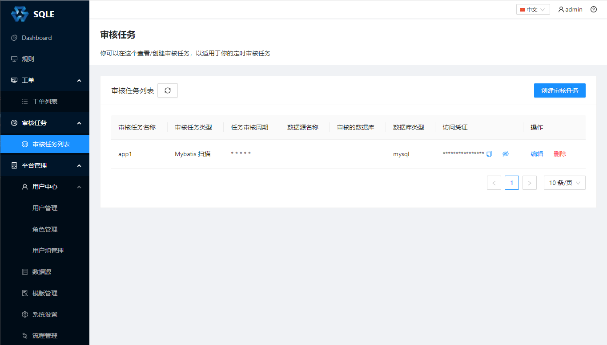
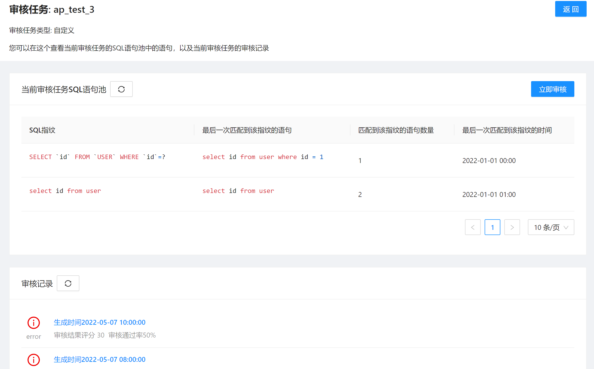
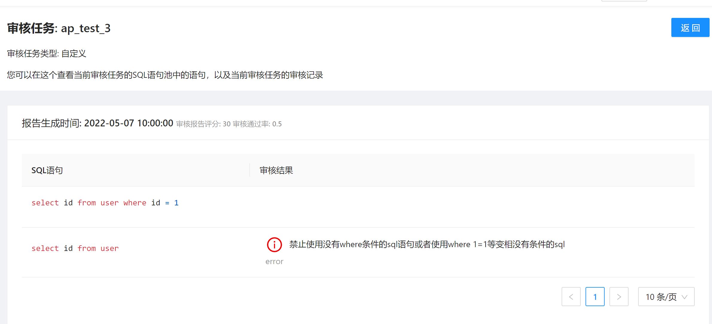

审核任务管理
创建审核任务

参数说明
- 审核任务名称：略；
- 数据源名称：填写需要审核的目标库，若不填则仅进行静态分析不会连库；
- 审核任务类型：参考审核任务介绍的审核任务分类；
- 任务审核周期：配置的是SQLE对审核任务进行自动审核的周期。
特殊参数说明
不同的审核任务类型可能会配置不同的参数，选中对应的审核类型后会自动展示
库表元数据
- 采集周期（分钟）：默认60分钟，代表SQLE server间隔多久采集一次库表元数据；
- 是否采集视图信息：开启后会采集视图。
Top SQL
- 采集周期（分钟）: 默认60分钟，代表SQLE server间隔多久采集一次Oracle Top SQL；
- top_n: 展示前多少条记录，默认3;
- V$SQLAREA中的排序字段：采用那个字段作为Top SQL 的排序字段
- "executions"： 按总执行次数排序
- "elapsed_time"：按总执行时间排序（默认值）
- "cpu_time"：按CPU消耗时间排序
- "disk_reads"：按物理读次数排序
- "buffer_gets"：按逻辑读次数排序
- "user_io_wait_time"：按 IO 等待时间排序
审核任务列表

列表页面展示了当前 SQLE 中正在运行的所有审核任务。点击审核任务的编辑按钮修改这个审核任务。另外可以看到访问凭证一列，这是给 Scanner 使用的，使用方式请参考Scanner一章。
审核任务详情
点击审核任务，进入审核任务的详情页面： 
在审核任务的详情页面，我们可以看到它的 SQL 池列表和对应产生的审核报告列表。上图中展示的 SQL 池列表中的 SQL 是通过 MyBatis Scanner 扫描代码仓库中文件得到的。
审核任务审核报告
点击审核记录，可以查看审核报告 